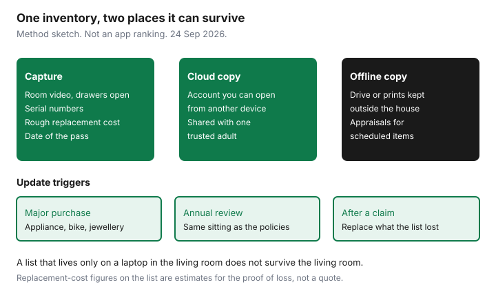

Insurance · Canada
Build a Canadian Home Inventory That Survives an Insurance Claim
After a fire or a break-in, the proof of what you owned is whatever you can still show. Memory under stress produces a short list and a low settlement. A home inventory is the list you build on a quiet Sunday so the proof of loss is a spreadsheet plus photos, not a reconstruction. Insurers and the Insurance Bureau of Canada treat a record of belongings as part of being ready to claim. The format is yours. The standard is that a stranger could match the photo to a line on the sheet.
Whether that line is paid at replacement cost or actual cash value is a different decision, already covered in replacement cost versus actual cash value. The inventory serves both. It does not change which basis you bought.
Disclosure: Education only. This page does not rank inventory apps, cloud services, or insurers. No affiliate offer fits a folder of your own photos. We do not sell policies. Replacement-cost figures you write down are estimates for a future proof of loss, not a quote.
Key takeaways
- Film each room with drawers and cupboards open, and photograph serial numbers on appliances, bikes, electronics, and tools.
- Keep a cloud copy you can open from a phone that is not in the house, plus an offline copy stored somewhere else.
- Receipts and appraisals belong with scheduled items. Special limits in the policy are why a ring or a bike needs its own line.
- Write a rough replacement cost in today’s dollars if the policy is replacement cost, and note age if contents are actual cash value.
- Tell one trusted adult how to open the folder. Redo the pass when you buy something large and at each annual insurance review.
Room-by-room photo/video method with open drawers and serial numbers
Work one room at a time, including the garage, the locker, and the storage crawl you pretend is empty. A slow video is enough for the room. Stop and take still photos of anything with a serial plate, a model number, or a high price: appliances, televisions, laptops, bikes, power tools, cameras, musical instruments, and the contents of a jewellery box. Open drawers and cupboards on the video so the adjuster can see that the kitchen was not twelve plates. Say the room name out loud at the start of each clip so the file sorts itself.
On the spreadsheet, one row per item that you would actually claim. Columns: room, item, quantity, brand if you know it, serial or model, approximate year, what you paid if you still know, and a rough cost to replace it today. Small goods can be a single row (“everyday clothing, adult, one closet”) with a note and a photo of the closet. A $2,000 bike is not a closet row.

Date the pass. A folder called “inventory final” with no date is weaker than “2026-11 kitchen.” If you remodel, do that room again. You do not need a perfect catalogue of wooden spoons.
Cloud backup plus offline copy; update after major purchases
The inventory has to survive the same event that creates the claim. A laptop on the dining table does not survive the dining table. Use two copies.
- Cloud. Put the video, photos, and spreadsheet in an account you can open with a password from someone else’s phone. A mainstream sync folder is enough. Turn on whatever multi-factor method you will still have if your phone is in the house.
- Offline. Copy the same folder to a drive, or print the spreadsheet and a contact sheet of photos, and keep that copy outside the home: a trusted person’s house, a work locker that is not your commute bag, or a safety-deposit box if you already have one. Update the offline copy when the cloud copy changes in a material way, not after every grocery trip.
Update the cloud folder the week you buy a major item. Appliance, phone, bike, instrument, furniture suite, jewellery. Drop the receipt photo into the same row. A six-year-old inventory that predates the kitchen renovation will be treated as incomplete, because it is.
Receipt and appraisal folder for scheduled items
Policies pay everyday contents up to the contents limit, and then they cap certain categories unless you schedule them. Jewellery, bikes, cash, collections, business tools, and fine art are the usual special-limit pages. The dollar cap is in your booklet, not in a national table. Read it. If a ring, a watch, or a bike is worth more than that line, ask to schedule it and keep the appraisal or the purchase receipt in this folder.
| Item | Keep | Why |
|---|---|---|
| Jewellery and watches | Appraisal, photos of marks, receipt if you have it | Special limits are often below the value of one ring |
| Bikes and e-bikes | Serial number, receipt, photo of the bike locked where you store it | Theft claims stall on “describe the bike” |
| Art, instruments, collections | Appraisal or bill of sale, and a photo in the room | A contents blanket may exclude or cap them |
| Home business tools | List them separately and ask if the policy even covers them | Many home policies restrict business property. Scheduling may not fix an exclusion. |
An appraisal that is a decade old still beats no appraisal. Refresh it when the value has obviously moved, and when you schedule a new item. Store the PDF with the inventory, not only in an email from the jeweller.
Rough replacement-cost estimates beat guessing under stress
On the night of a loss you will not comparison-shop a sofa. A rough replacement cost, written now, is a number you can defend: the current price of a similar item at a retailer you would actually use, noted with the date you looked. It is an estimate. The proof of loss may still ask for what you paid and for actual cash value. Give both when you know them.
If your contents are insured at replacement cost, the cheque is often actual cash value first and the balance after you replace. The basis guide explains that holdback. Your inventory’s “replace today” column is what you show when you buy the replacement. If contents are actual cash value, age matters more than the new price. Write the year. A five-year-old laptop is not a new laptop on an ACV form.
Do not inflate the column because you are angry at the loss you have not had yet. A wilfully false figure on a proof of loss is how claims are denied for fraud. The estimate should be a price you could show a receipt for. Round to the nearest ten dollars and move on. Perfection is the enemy of a finished room.
Share access instructions with a trusted household member
One adult in the household, or one adult you trust who does not live in the house, needs the location of both copies and the way in. A password manager’s emergency-access feature works. A sealed note in the offline location works if it does not sit next to a list of every password you own. Walk them through it once. “The photos are on my phone” is not access if the phone melted.
Tell them what the folder is for: a claim, not a catalogue of valuables to discuss. They do not need to memorize the list. They need to open it if you are in hospital or travelling when something happens. If your relationship with that person changes, move the share. An ex-partner with a live link to every serial number in the house is a new risk, not a backup.
Spouses and adult children who live with you should know the cloud folder exists. The offline copy can stay with the out-of-house person so one event does not take both.
Revisit inventory at each insurance annual review
Put the inventory on the same sitting as the annual insurance review. You already have the declarations page open. Check three things: the contents limit still covers the rough total of your replacement column, scheduled items are still listed at a sensible value, and the special-limit page has not quietly changed on renewal.
A contents limit of $40,000 does not become adequate because the photos are pretty. If the column totals have grown past the limit, that is a quote question, not a filing problem. Use the spreadsheet method when you shop the higher limit. Do not wait for a claim to discover the cap.
After a claim, rebuild the rows you lost. The home claim guide asks for quantity, age, cost, and actual cash value in the proof of loss. An inventory that already uses those columns is the proof. An inventory that died in the fire is a story. If a denial arrives, the appeal guide is the next page, and this folder is the evidence, not a substitute for the policy wording.
Sources & date stamps
- Insurance Bureau of Canada consumer materials on preparing a home inventory and knowing your coverage. Used 24 Sep 2026. ibc.ca.
- Financial Consumer Agency of Canada, get insurance: understand what the policy covers and keep records. Used 24 Sep 2026.
- Ontario statutory proof of loss asks for quantities, costs, actual cash value, and the amount claimed, as described on the home-claim guide. Used 24 Sep 2026.
- Special limits and scheduled-property rules are contractual. Read the current declarations. No national dollar cap is stated on this page.
Frequently asked questions
Do I need a specific app for a Canadian home inventory?
No. A phone video, still photos of serial numbers, and a spreadsheet are enough. Use any cloud account you can open from outside the house, and keep a second copy elsewhere. This page does not rank apps.
What should the spreadsheet columns be?
Room, item, quantity, serial or model if it has one, approximate year, what you paid if you know it, and a rough cost to replace it today. Those fields match what a proof of loss tends to ask.
How do scheduled items differ from the main list?
Everyday contents sit under the contents limit and under special caps for categories such as jewellery and bikes. If an item is worth more than the cap in your booklet, schedule it and keep the appraisal with the inventory.
Who should be able to open the folder?
One trusted adult who can reach it if you cannot, plus the people who live in the house. Keep an offline copy outside the home so a fire does not take the only file.
How often do I update it?
After a major purchase, after a renovation, and at each annual insurance review. Check that the contents limit still covers the rough total.